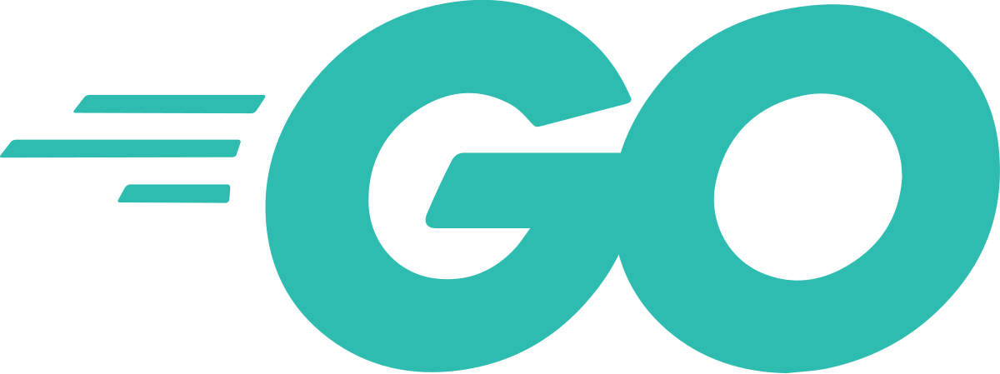
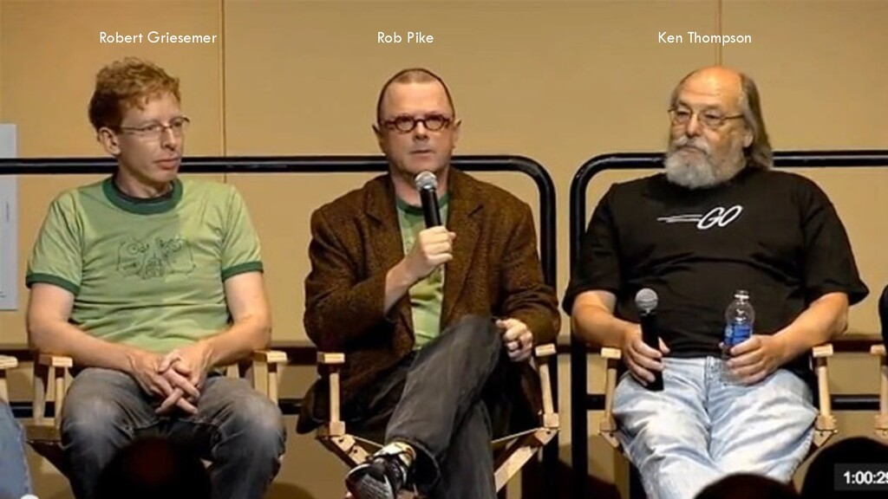

Язык программирования Go был разработан в Google в 2007 году. Основные разработчики — Роберт Грисмер, Роб Пайк и Кен Томпсон.
Go был официально представлен в 2009 году и быстро завоевал популярность благодаря своей простоте и эффективности.
Язык был создан для повышения продуктивности разработки программного обеспечения и поддержки современных многопоточных приложений.
Go — это статически типизированный язык с компиляцией, который поддерживает параллелизм и обеспечивает высокую производительность.
| Особенность | Описание |
|---|---|
| Статическая типизация | Go использует статическую типизацию для повышения безопасности кода. |
| Параллелизм | Поддерживает параллелизм через горутины и каналы. |
| Простота синтаксиса | Синтаксис языка прост и понятен, что облегчает обучение. |
import "fmt"
// Функция для вычисления суммы двух чисел
func sum(a int, b int) int {
return a + b
}
func main() {
result := sum(3, 5)
fmt.Println("Сумма:", result)
}
В этом примере мы видим базовую структуру программы на Go и простую функцию для вычисления суммы двух чисел.